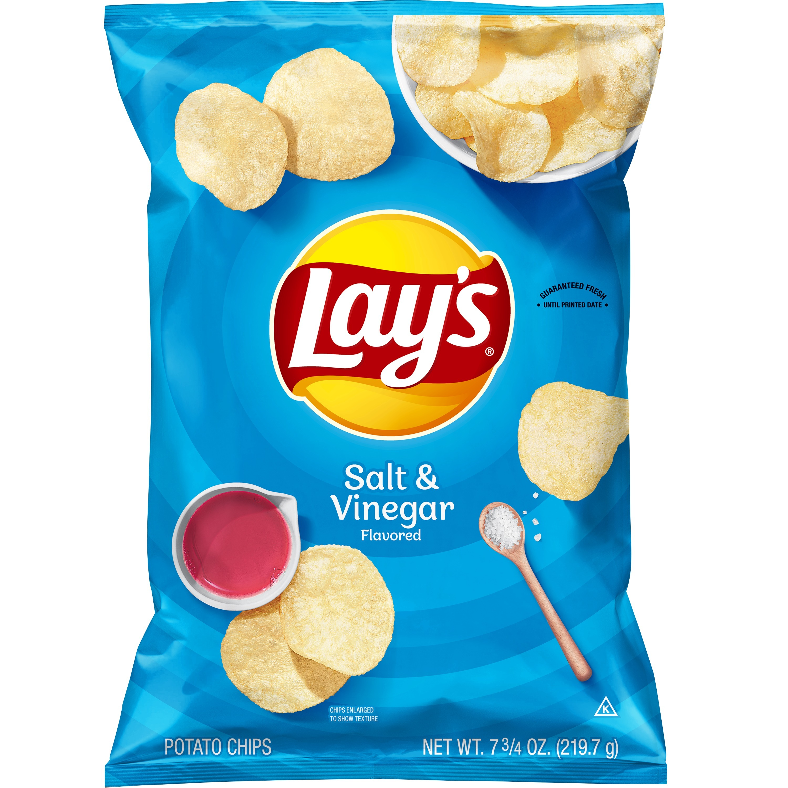

Original Lays
Salt and vinegar chips are a mouth-puckering, flavor-packed snack that has earned a devoted following for its bold and distinctive taste. These chips offer a unique combination of salty and tangy flavors that create a delightful sensory experience with every bite. Loved by those who enjoy a touch of acidity in their snacks, salt and vinegar chips have become a beloved classic in the world of savory treats. Lorem The secret to the irresistible allure of salt and vinegar chips lies in the seasoning process. The chips are typically coated with a mixture of salt and vinegar, infusing each slice of potato with a sharp, zesty kick. The salt enhances the natural earthy flavor of the potato while the vinegar provides a sour and acidic punch that wakes up your taste buds. The result is a harmonious balance of bold flavors that is both mouthwatering and addictive..
| Aspect | Lay's Sour Cream and Onion Chips | Pringles Sour Cream and Onion |
| Flavor | Creamy and tangy with onion notes | Creamy with pronounced onion flavor |
| Texture | Thin and crisp | Uniform, stackable, and sturdy |
| Packaging | Typically in a traditional bag | Comes in a unique, cylindrical can |
One of the standout features of Original Lays potato chips is their versatility. Whether enjoyed on their own during a movie night, paired with a sandwich for a satisfying crunch, or used as a base for creative culinary experiments, these chips can adapt to various occasions. They are a staple at picnics, parties, and gatherings, providing a familiar and comforting snack option that appeals to people of all ages.
Cape Cod Kettle
Cape Cod Kettle Chips are a premium and distinctive brand of potato chips that have garnered a reputation for their exceptional quality and robust, kettle-cooked flavor. Made with hand-selected, farm-fresh potatoes, these chips are sliced slightly thicker than your average potato chip, giving them a hearty and satisfying crunch. Cooked in small batches in kettles, a traditional method that allows for precision and care, Cape Cod Kettle Chips are known for their golden, crispy perfection. Their range of flavors, from the classic Sea Salt to more adventurous varieties like Sweet Mesquite Barbecue, offers a delectable snacking experience for those who appreciate the art of potato chip craftsmanship. Whether enjoyed as a standalone snack or paired with your favorite dip, Cape Cod Kettle Chips bring a taste of authenticity and quality to every chip lover's palate.
Pringles
Salt and Vinegar Pringles are a flavor-packed delight for those who enjoy a tangy and savory snacking experience. These uniquely shaped, saddle-like crisps deliver a burst of zesty vinegar flavor perfectly balanced with a touch of saltiness. With every chip, you're treated to an enticing combination of sour and salty that tantalizes your taste buds. The thin, stackable nature of Pringles adds an extra layer of crunchiness to this bold flavor, making them a favorite choice for those seeking a satisfying and mouthwatering snack. Whether enjoyed as a stand-alone treat or paired with a refreshing beverage, Salt and Vinegar Pringles offer a distinctive and memorable snacking experience that keeps snack enthusiasts coming back for more.